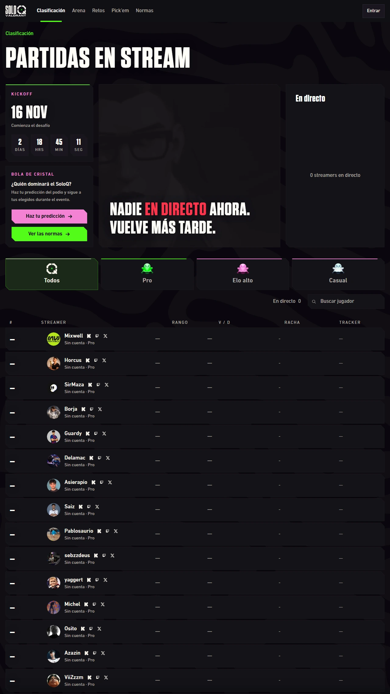
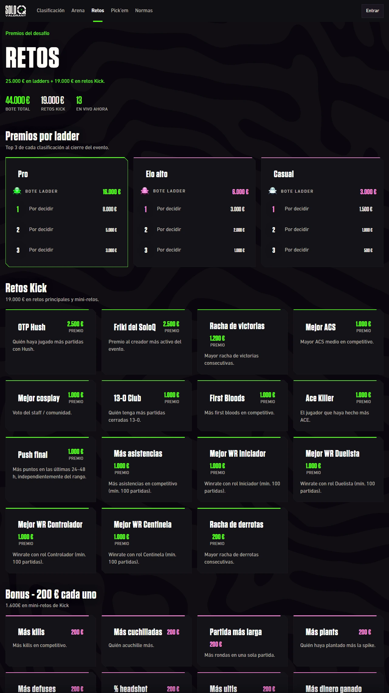
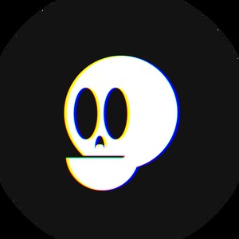

GAMEPLAY


75
STREAMERS
22
DÍAS
44.000 €
GAMEPLAY
200 €
A LA PEOR RACHA DE DERROTAS
GAMEPLAY
soloqvalorant.com

16/11
07/12
GAMEPLAY
ESTA CUENTA EMPEZÓ CON CLIPS DE VALORANT
2022
·
2025
269
MIL VISTAS
GAMEPLAY
EDICIONES DEL SOLOQ DE VALORANT
2021
SIRMAZA
2022
HORCUS
2026
?
GAMEPLAY
MIXWELL
2022: 7.
O
(INMORTAL 3)
2026: ORGANIZA Y JUEGA
GAMEPLAY
SOLO SOLOQ
SIN DÚO NI EQUIPO
8
PARTIDAS AL DÍA
100
MÍNIMO PARA COBRAR
STREAM + CÁMARA
PARTIDA COMPLETA
CUENTA
QUE DA RIOT
GAMEPLAY
PREMIOS POR LADDER
PRO
25 STREAMERS
BOTE
16.000 €
1.
O
8.000
€
ELO ALTO
25 STREAMERS
BOTE
6.000 €
CASUAL
25 STREAMERS
BOTE
3.000 €
GAMEPLAY
RETOS
OTP
HUSH
2.500 €
MEJOR
COSPLAY
1.000 €
RACHA DE
DERROTAS
200 €
GAMEPLAY
soloqvalorant.com

23
RETOS
·
19.000 €
GAMEPLAY
soloqvalorant.com
SOLOQVALORANT.COM
GAMEPLAY
AXL
DESARROLLADOR WEB
AXL13.DEV
GAMEPLAY
MIXWELL
1,28
M
EN TWITCH
PRO
GAMEPLAY
HORCUS
CAMPEÓN 2022
RADIANT 645 RR
2026: 2 MESES LESIONADO
GAMEPLAY

SIRMAZA
CAMPEÓN 2021
GAMEPLAY
LA JUBILONA
CAMPEONES DEL PREMIER (ABRIL 2026)
MIXWELL
HORCUS
SIRMAZA
BORJA
NIXERINO
5 EN LA PRO
·
8.000 €
AL 1.
O
GAMEPLAY
BLACK
952
MIL EN TWITCH
ELO ALTO
GAMEPLAY
KADNITA
ARGENTINA
LA ÚNICA LATINA
ELO ALTO
GAMEPLAY
MI APUESTA:
HORCUS
TOP 1 RADIANT
X6
GAMEPLAY
¿QUIÉN GANA?
MAÑANA:
DÍA 1
GAMEPLAY
SOLOQ VALORANT ·
DÍA 0